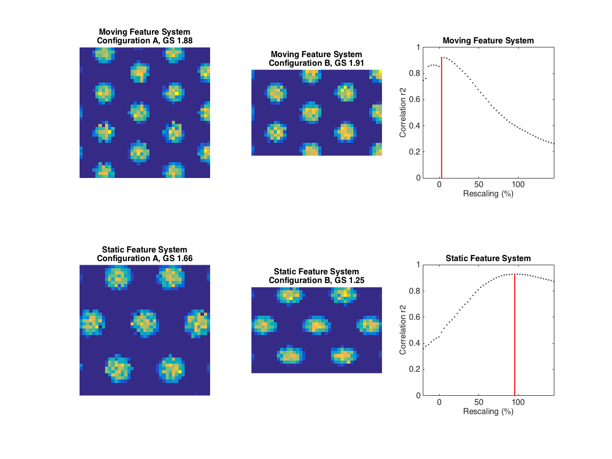

<html><pre>
This is the readme for the models associated with the paper:

Raudies F, Hasselmo ME (2015) Differences in Visual-Spatial Input May
Underlie Different Compression Properties of Firing Fields for Grid
Cell Modules in Medial Entorhinal Cortex. PLoS Comput Biol 11:e1004596

This code was contributed by Florian Raudies and is also available at
the journal web site: <a href="http://journals.plos.org/ploscompbiol/article/asset?unique&id=info:doi/10.1371/journal.pcbi.1004596.s003">Matlab code from journal</a>.

This directory contains Matlab (R) code to replicate the results for
Figure 2, 3, 4, and S1, and S3.

Entering "Fig3" on the matlab command prompt leads for example to:



Copyright (C) 2015 Florian Raudies, 04/29/2015, Palo Alto, CA.

This program is free software: you can redistribute it and/or modify
it under the terms of the GNU General Public License as published by
the Free Software Foundation version 3 of the License.

This program is distributed in the hope that it will be useful,
but WITHOUT ANY WARRANTY; without even the implied warranty of
MERCHANTABILITY or FITNESS FOR A PARTICULAR PURPOSE.  See the
GNU General Public License for more details.

You should have received a copy of the GNU General Public License
along with this program.  If not, see <http://www.gnu.org/licenses/>.
